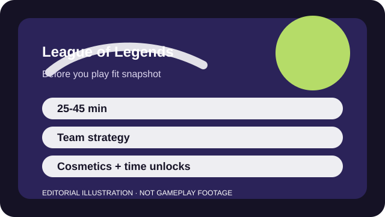

BEFORE YOU PLAY
What this page is and is not
This is a sourced editorial fit profile. It is designed to help with a yes-or-no play decision, and it does not claim a scored hands-on review.
The first hours feel chaotic because the game assumes vocabulary you do not yet have. The fit becomes clearer once you narrow yourself to one role and a tiny champion pool.
The first-session loop to judge is simple: Manage your lane, contest objectives, and build team-fight advantage through champion knowledge and map timing.
Account levels and champion ownership matter early, but long-term retention comes from knowledge depth and ranked improvement.

FIT SNAPSHOT
League of Legends at a glance
| Genre | MOBA |
|---|---|
| Platforms | PC |
| Business model | Free-to-play competitive MOBA with cosmetic monetization and time-based champion unlocking. |
| Typical session | 25-45 minute matches, with extra time required for learning outside the match itself. |
| Play style | team strategy arena |
| Learning barrier | League's core objective is readable, but the game becomes demanding once matchups, role expectations, and objective timings start compounding. |
| Social shape | Solo queue works, yet the experience is emotionally easier when you have friends to queue with or strong mute discipline. |
WHO IT FITS
Best fit, likely friction, and the social reality
competitive players who enjoy team strategy, lane responsibilities, and learning a big champion roster over months
players who want short matches, a low knowledge load, or a calm solo experience
Solo queue works, yet the experience is emotionally easier when you have friends to queue with or strong mute discipline.
Account levels and champion ownership matter early, but long-term retention comes from knowledge depth and ranked improvement.
FIRST SESSION PLAN
How to test the fit in one evening
- Pick one lane and two beginner-friendly champions instead of touching every role.
- Treat minion timing and recall rhythm as the first lessons, not kill chasing.
- Use pings heavily and mute chat early if the social tone starts distracting you.
- End the night by naming one map objective you still do not understand and look up only that.
Use the first session to answer these fit questions instead of judging rank, win rate, or store value immediately.
- Do you like studying outside the match as much as competing inside it?
- Are you comfortable with 30-minute losses that still teach something useful?
- Will team friction ruin the fun faster than the strategy can repay it?
TIME, COST, AND COMMITMENT
What you are really signing up for
| Session budget | 25-45 minute matches, with extra time required for learning outside the match itself. |
|---|---|
| Social demand | Solo queue works, yet the experience is emotionally easier when you have friends to queue with or strong mute discipline. |
| Progression shape | Account levels and champion ownership matter early, but long-term retention comes from knowledge depth and ranked improvement. |
| Spending pressure | Core competition is free. Cosmetics dominate monetization, while expanding a big champion pool takes time rather than direct power purchases. |
For many players, League becomes a hobby game rather than a casual detour, because even moderate competence depends on repeated map, role, and matchup study.
Core competition is free. Cosmetics dominate monetization, while expanding a big champion pool takes time rather than direct power purchases.
SOURCES AND LIMITS
What was checked, and what can change
- Patch balance and item systems can alter role priorities quickly.
- New champions and seasonal structure changes affect the learning load.
- Onboarding tools and queue formats can improve or complicate the beginner path.
This profile uses official game pages and defensible general product knowledge to frame the player fit. It does not claim live testing across every platform, accessibility need, or current event rotation.